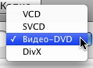
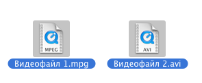
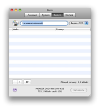
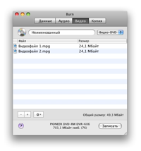
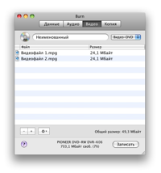
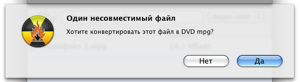

Запись видеодисков:
Burn может создавать 4 типа видеодисков. VCD — самый первый формат цифровых видеодисков. Его сменил формат SVCD с более высоким разрешением. Затем появились диски DVD-Video, получившие наибольшее распространение для цифрового видео. Многие современные проигрыватели DVD могут воспроизводить также диски DivX. Этот формат особо популярен в Интернет. Файлы DivX значительно меньше, чем MPEG2 (используемые на дисках DVD-Video), но имеют удовлетворительное качество звука и изображения.
1 Выберите формат
Выберите формат из выпадающего меню. Важно знать, какие
форматы видеодисков поддерживает ваш плеер. Найдите нужную информацию в
описании
или на корпусе плеера.

2 Выберите несколько видеофайлов
Выберите нужные видеофайлы, поддерживается большинство форматов.
Заметьте: некоторые защищенные файлы QuickTime могут не работать.

3 Перенесите их в список:
«Бросьте» выбранные файлы в окно списка. Если файлы уже в нужном
формате, они будут сразу добавлены. Иначе Burn предложит их
конвертировать.
 


4 Щелкните «Записать»
Откроется диалоговая панель.

5 Выберите параметры
Выберите параметры сессии. Дополнительные настройки можно найти в окне
«Настройки», доступном через меню Burn.

6 Запишите диск
Снова щелкните «Записать», чтобы начать процесс записи.

7 Burn
произведет запись диска
В процессе записи Burn будет показывать ее ход в информационной
панели.